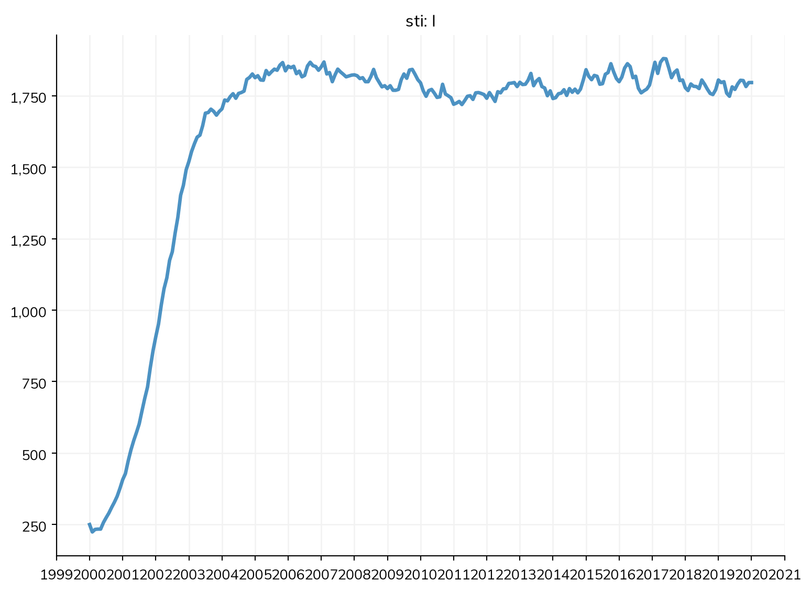
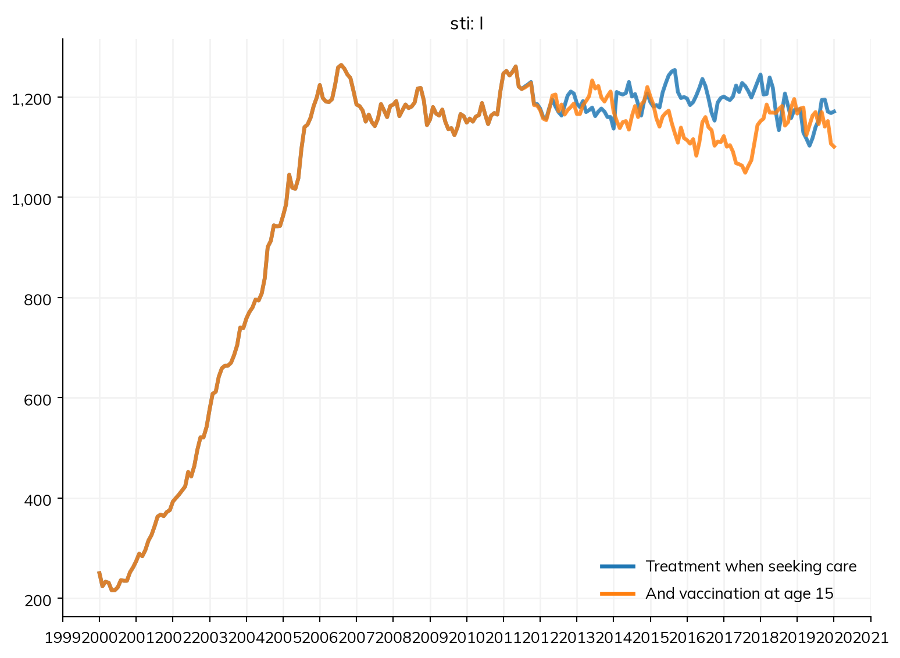

Understanding the impact of interventions is one of the most common reasons to use a disease model. T5 showed how to vaccinate a group of people and change a parameter from a date, for measles in a town. This tutorial is about interventions that reach particular people because of what has happened to them: treating people when they seek care, screening a group and treating those who test positive, notifying their partners, and vaccinating people as they reach an age. Each of these depends on individuals, their infections, their test results, and their partners, so they run as agents.
Products and interventions
Starsim contains products, which can be thought of as the actual test, diagnostic, treatment, or vaccine product being used, as well as interventions (deliveries), which are responsible for delivering the products to the population. Starsim includes three basic types of product, ss.Vaccine, ss.Diagnostic, and ss.Treatment, and a delivery for each: ss.vaccinate(), ss.screen(), and ss.treat(). A delivery says who receives the product (where= for who is eligible, who= or on= for something that has happened to them), when (at=, interval=, start=, at_age=), and how many (coverage=, capacity=). These are general enough that they rarely need to be tailored to a particular disease, and you can just use them directly. That being said, you are always welcome to write your own, to capture particular features of the intervention you’re modeling (see A5).
Starting point
Measles has no treatment, so this tutorial uses the sexually transmitted infection from A2: a simplified curable bacterial infection, such as gonorrhea, that lasts 6 months on average untreated and leaves no immunity (an SIS model), on a sexual network in which partnerships last about a month. The network remembers partnerships for a year after they end (memory=), which partner notification will use. Births and deaths keep the population turning over, so that people age into the groups that interventions reach. It runs as 5,000 agents for 20 years, in monthly steps:
import numpy as npimport starsim as ssS, I = ss.states('S I')infection = S >> I @ ss.peract(m2f=0.1, f2m=0.05)*I # Chance of infection per actrecovery = I >> S @ ss.months(6) # Infected for 6 months on average, untreatedsti = ss.Disease(infection, recovery, init_prev=0.05)settings =dict( networks = ss.SexualNet(dur=ss.months(1), memory=ss.years(1)), # Partnerships of about a month, remembered for a year demographics = [ss.birth(rate=ss.peryear(0.02)), ss.death(rate=ss.peryear(0.02))], n_agents =5000, start =2000, stop =2020, dt = ss.months(1), verbose =0,)sim = ss.Sim(sti, **settings)sim.run()sim.plot('sti.I')
Starsim kernels: Rust, OUT OF DATE (built before its source last changed, so results may be wrong): run "./build" in starsim/solvers/rust/

The infection is endemic, with about a third of people infected at any time.
Treating people who seek care
Some people with the infection notice symptoms and seek care. Suppose 30% of people seek care within a month of infection, on average, and are treated with a drug that cures 95% of them. The drug is the product; ss.treat() delivers it. on=sti.infection delivers it to the people who were just infected, coverage=0.3 to 30% of them, and delay= a time after their infection, drawn for each person:
drug = ss.Treatment(cure=0.95) # Cures 95% of the people it is given tocare = ss.treat(drug, where=sti.infection, coverage=0.3, delay=ss.uniform(ss.weeks(1), ss.months(2)))
The treatment is given when it is due, whether or not the person is still infected by then; for someone who has recovered already, it does nothing.
Screening, and treating those who test positive
People without symptoms don’t seek care, so they can only be found by screening. Here people aged 15 to 29, who have the most partners, are screened every 6 months from 2010, with a test that finds 90% of infections (its sensitivity) and gives a false positive for 2% of those not infected (its specificity). Half of the people eligible are reached in each round. Those who test positive (screening.positive) are treated:
young = (ss.ppl.age >=15) & (ss.ppl.age <30) # Who is eligible: a condition on each person, worked out when it is neededscreening = ss.screen(sensitivity=0.9, specificity=0.98, where=young, coverage=0.5, interval=ss.months(6), start='2010')treatment = ss.treat(drug, who=screening.positive)
where= takes any condition on people or on the states of a module, combined with & (and), | (or), and ~ (not): young & ~sti.I would screen only young people who aren’t infected, for example (which would be pointless, but possible).
Notifying partners
A person who tests positive was infected by someone, and may have infected others. Partner notification reaches their partners, with trace=: it delivers the product to the contacts, on the named network, of the people the event in who= selects. Since the network remembers partnerships for a year, this reaches the partners of the past year, not only the current ones. Here half of the partners of those who test positive are reached, and treated without being tested (as in expedited partner therapy):
Treating people who seek care cuts the number infected by about a third, since it shortens the infections it reaches. Screening from 2010 cuts it further, and notifying partners further still: each finds infections that the others miss. The summary gives the total number of infections over the 20 years in each scenario:
msim.summarize().loc['sti_infection']
value
scenario
No treatment
58589.0
Treatment when seeking care
45280.0
And screening
41824.0
And partner notification
35921.0
The deliveries have results of their own, such as the number of people screened, the number who tested positive, and the number of partners treated:
Everyone who tests positive is treated, including the few whose positive result is false. Partner notification treats several times as many people as screening finds, since each person who tests positive has had several partners in the past year; many of them are infected, and it is those it cures that make the difference.
Individual histories
As agents, every delivery remembers, for each person, whether its event happened to them (.ever), how many times (.count), and how long ago (.since). This gives individual histories after the run, e.g. how many times each person tested positive:
screening = sim.interventions.screeningtimes_positive = screening.positive.count.valuesprint('Number of people who tested positive 0, 1, 2, ... times:', np.bincount(times_positive.astype(int)))
Number of people who tested positive 0, 1, 2, ... times: [4290 370 231 95 35 10]
About half of the people who tested positive did so more than once, since curing an infection doesn’t protect against the next one; in practice this is a reason to retest people some months after treatment. A history can also decide who receives something: where=screening.positive.since <= ss.months(6) would make a delivery to people who tested positive in the past 6 months (e.g. a retest), and where=~treatment.ever to people never treated.
Vaccination as people reach an age
There is no vaccine for gonorrhea in routine use, but a meningococcal vaccine appears to give some protection, perhaps 30–40%. Suppose one that is 35% effective is given to 80% of people as they turn 15, from 2010. at_age= is routine delivery as people reach an age: each person is offered it once, on the step on which they reach it, and not everyone older on the first day:
vaccination = ss.vaccinate(efficacy=0.35, at_age=15, coverage=0.8, start='2010')sims = {'Treatment when seeking care': ss.Sim(sti, interventions=care, **settings),'And vaccination at age 15': ss.Sim(sti, interventions=[care, vaccination], **settings),}msim = ss.parallel(sims)msim.plot('sti.I')print('Doses:', msim.sims['And vaccination at age 15'].results.vaccination.delivered.sum())

Doses: 538.0
The vaccine makes little difference by 2020: after 10 years, it has reached only the people who were 15 or younger in 2010, a small share of those at risk, and it protects each of them only partly. Vaccination as people reach an age pays off over decades, as each cohort replaces an unvaccinated one. By default a vaccine is leaky: everyone vaccinated is 35% less likely to be infected at each exposure. With leaky=False it is all or nothing instead (35% fully protected, the rest not at all), and waning= makes protection fade; see Products.
Interventions of your own
These deliveries cover most programs. When who receives something depends on a rule of your own, deliver= takes a function of the sim that returns the UIDs of the people who receive it on each step; and an intervention that does something no product does is a module written as code, a class with a step() method. T9 and A5 show how, and Interventions in the user guide covers the rest: capacity, priority, queues, and delays.
Exercises
In the scenario with partner notification, what happens if the partners of people who seek care are notified too (a second notification, with who=care)? Is the effect larger than notifying the partners of those found by screening?
Screening reaches people aged 15 to 29. How much does the effect change if it reaches everyone aged 15 to 49 instead, and how many more tests does it take? Which gives more infections prevented per test?
Add a catch-up campaign to the vaccination at age 15: a single round in 2010 () for everyone aged 15 to 29, with the same vaccine. How much sooner does vaccination make a difference, and how many more doses does it take?